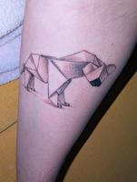

AWS says a billing software bug caused some customers to see wildly inflated estimated charges, including reports of accounts showing bills in the billions or even trillions of dollars. The Register reports: An open issue on the AWS Health Dashboard (archived copy at the time of writing) popped up at 1:33 am Pacific time on Friday informing users that Cost Explorer was "reflecting inaccurate estimated billing data." As of writing, the issue is still unresolved despite AWS trying several different things to get it fixed. The company apparently identified the root cause within an hour and a half of beginning its investigation, only describing it as "an issue with unit pricing within the estimated billing computation subsystem."
AWS followed up by pausing estimated bill updates, saying customers would continue to see the inflated figures already displayed, but that those estimates would not increase further. "The displayed billing estimates do not reflect actual usage and charges," AWS explained, noting that customers don't need to take any action, like, we imagine, flooding the help portal with tickets telling them what they already know, for instance.
"Once the issue has been mitigated, we expect full resolution to take multiple hours as we work through recomputing the estimated billing data," AWS added. After we first published this article, Amazon updated the issue page to indicate that it had identified the root cause and mitigated the underlying issue. The company says that it's begun backfilling data in the Cost Management Console to correct billing numbers, and that all customers should see corrected amounts by Saturday, July 18 at noon pacific time.
Read more of this story at Slashdot.
The FBI arrested a Florida man accused of uploading fake Steam games containing malware that stole passwords, data, and cryptocurrency wallet credentials from victims. Prosecutors say the scheme infected about 8,000 people, compromised roughly 80 crypto wallets, and stole at least $220,000 through games that appeared legitimate but secretly carried malware. TechCrunch reports: On Tuesday, the FBI arrested Zyaire Wilkins, a 21-year-old Florida resident and student. On Wednesday, prosecutors accused him and a number of unnamed co-conspirators of hacking crimes. Over the past two years, Wilkins and his partners allegedly published several malware-laden video games on Steam, including BlockBlasters, Dashverse, Lampy, Lunara, and PirateFi. Using that malware, says the FBI, Wilkins and his accomplices infected around 8,000 victims, and then hacked around 80 cryptocurrency wallets to steal at least $220,000 worth of crypto. Wilkins and the others marketed their malicious video games on Discord, LinkedIn, and Telegram, according to the authorities.
[...] After the FBI identified another person involved in the crimes, according to the complaint, federal agents interviewed them. The unnamed person said they worked with other people to raise money to launch and market the malicious games in return for sharing some of the stolen cryptocurrency. The FBI identified a specific crypto account involved in the scheme, and then traced cryptocurrency payments made with that account to buy several gift cards, including for UberEats. After subpoenaing Uber, the feds were able to see that the gift cards were linked to an account that made deliveries to Wilkins, who went by the nickname Sibel.eth online, according to the complaint. The feds then got a search warrant for Wilkins' residence, where they seized his MacBook laptop, cellphones, other devices, and digital wallets. According to the complaint, he refused to speak or answer any questions.
Read more of this story at Slashdot.
Anthropic is reportedly in very early talks to lease computing power from Meta in a potential deal worth around $10 billion. The discussions follow Anthropic's recent compute deal with SpaceX and come as Meta explores selling excess AI capacity as part of a broader push to turn its massive infrastructure spending into a cloud business. CNBC reports: Access to enough AI chips remains a challenge for firms like Anthropic, which places usage limits on its most advanced models like Fable. [...] Meta could spend as much as $145 billion on capital expenditures, including for AI infrastructure, in 2026. Last October, Zuckerberg said that companies are regularly "asking if we have compute that they could buy from us at some premium to what we've bought it at."
Read more of this story at Slashdot.
An anonymous reader quotes a report from MacRumors: Apple has reportedly sent legal letters to dozens of former Apple employees now working at OpenAI, telling them to preserve potentially relevant documents and communications as it continues to pursue its trade secret lawsuit against the AI company. The Financial Times (paywalled) reports that Apple has targeted around 40 former employees with legal preservation letters, acting on its belief that the alleged misappropriation of confidential information may extend beyond the individuals named in its original complaint.
The development follows Apple's lawsuit filed last week against OpenAI, in which the company alleges a coordinated effort to obtain confidential information relating to its hardware engineering and product development. Apple claims OpenAI recruited key engineers, including former Apple executives Tang Tan and Chang Liu, and benefited from proprietary designs, manufacturing processes, and other trade secrets. Tan is OpenAI's Chief Hardware Officer and a 24-year Apple veteran who led product design, while Liu is on the hardware team at OpenAI after working as a senior system electrical engineer at Apple.
Read more of this story at Slashdot.
ABC News reports that White House teleprompter operator Gabriel Perez allegedly made more than $100,000 betting on Kalshi markets tied to what President Trump would say in speeches, using his access to prepared remarks and last-minute edits. ABC News reports: According to the sources, Kalshi alerted its regulator, the Commodity Futures Trading Commission (CFTC), to the suspicious activity on its "Mentions" market, where users can bet on whether specific words, phrases or topics are uttered during a public speech. "Our surveillance team promptly flagged and referred these trades to the CFTC, and we are cooperating and assisting regulators," Kalshi's head of enforcement, Bobby DeNault, said in a statement provided to ABC News.
White House Press Secretary Karoline Leavitt told reporters Thursday afternoon, following ABC News' report, that Perez has been put on unpaid administrative leave. Leavitt said she spoke with President Trump about it, and he thought it was a "disgrace" and made the decision himself to put Perez on unpaid leave. Leavitt said she was unaware of any other White House staffers who have made such trades. "The White House has strict ethics guidelines that we expect all staffers and officials to follow," said White House spokesperson Davis Ingle when contacted by ABC News.
In addition to February's State of the Union address, sources said CFTC investigators discovered that Perez placed bets on more than a dozen Trump speeches over a three-month period, including a December primetime address, a January speech at the World Economic Forum in Davos, Switzerland, and Trump's remarks in March during a Medal of Honor ceremony.
Read more of this story at Slashdot.
Astronomers have directly detected helium in the atmosphere of LHS 1140 b, a rocky exoplanet 48 light-years away that sits in its star's habitable zone. The finding marks the first confirmed atmosphere around a rocky, Earth-like planet in the habitable zone, strengthening the case that some planets orbiting red dwarfs can retain atmospheres and potentially support liquid water. "We have actually detected directly the helium present in the atmosphere itself, and that's the first direct detection for any rocky exoplanet, which is really exciting ... and then there's this added bonus that it's in the habitable zone, which is super exciting for astrobiology and habitability and searching for life," lead author Collin Cherubim, who recently earned his Ph.D. from Harvard University, told Space.com. "It feels kind of surreal." From the report: This exoplanet, or planet outside of our solar system, was first discovered in 2017 by a team led by astronomer Jason Dittmann who is now a co-author on this new discovery. "This planet was found like 10 years ago, and we're just now saying, okay, that's an atmosphere," Dittman told Space.com. "We're slowly narrowing the gap and checking these boxes ... we're finding a planet that's rocky, a planet that's of the right temperature and now ... it's like okay, we finally found one that has an atmosphere."
And being a rocky planet, "there's definitely a surface ... it's made of rocks," Dittman said. What does the planet's surface look like? We can't say yet, but the researchers who found this planet's atmosphere think there's a good chance it could have water. While it orbits a red dwarf star, which is smaller and cooler than the sun, it orbits closer than we do to our star, maintaining a temperature that keeps the planet in the "Goldilocks zone" where liquid water could exist on its surface. "It probably also has a lot of water," Cherubim said. "If it has some amount of atmosphere that can provide a bit of a greenhouse effect, which we know that it does now ... it will very likely be what we consider to be habitable conditions on Earth, and conditions that would likely support liquid water."
So is it Earth-like? While it's certainly not an Earth copy, this planet can be considered Earth-like in two main ways, Cherubim shared. One: its overall composition. The planet is rocky, likely with an iron core and (now we know) it has an atmosphere. And two: the planet's temperature is just right for liquid water, which is necessary for life at least as far as we understand it on our planet. [...] "I'm not claiming this planet has life," Cherubim made clear. With further investigation, scientists could better understand what else might be in this planet's atmosphere, and they could confirm if it has water. Further observations might not be able to confirm habitability or identify any life on the planet, but they could at least help us to better understand planets like this. The findings have been published in the journal Science.
Read more of this story at Slashdot.
Last year just 0.6% of new vehicles made for U.S. customers were stick shifts, reports the Washington Post, citing preliminary government data.
"That's a precipitous drop from the 34.6 percent of vehicles with manual transmissions produced in 1980."
[T]he stick shift's popularity hit multiple new lows in recent years, with no signs of a turnaround, thanks to new technologies and a rapidly changing marketplace. Buyers and automakers increasingly have turned to the sophisticated automatic drivetrains that now smoothly swap gears in fractions of a second and with better fuel efficiency. The average new vehicle today comes with seven gears, thanks to computers, twice as many as in 1980 and more gears than any ordinary driver would want to shift through using a manual gearbox. At the same time, sporty cars — the kind that buyers might demand a stick shift to drive — have fallen out of favor, replaced by interest in hulking SUVs, which are almost always automatics. The stick shift's demise has been hastened, too, by the rise of electric vehicles and increasingly autonomous vehicles. Neither have any need for a manual transmission...
Europe has seen a less dramatic decline in stick shifts, with manual transmissions dropping from 91 percent of car registrations in 2001 to 29 percent in 2024 among Europe's largest auto markets, according to industry analyst JATO Dynamics... Subaru made its name with manual cars. But the Japanese automaker stopped offering a manual Crosstrek with the 2023 model year, having already dropped that transmission from its Legacy, Outback and Forester models. Other automakers have followed the same path. Volkswagen announced that it plans this year to ditch its last U.S. stick-shift model, the Jetta GLI.
Even Toyota, Honda, and BMW have all reduced the number of cars for the U.S. market with a manual transmission, the article points out — leaving stick shift-loving Americans with a total of about 24 new-vehicle models to choose from. The articles adds that only 60% of Americans know how to drive a manual transmission (according to a survey from auto parts retailer AmericanMuscle): 83% for baby boomers but 39% for Gen Z. "Respondents were about evenly split on whether knowing how to drive a manual is an important life skill."
But Ford CEO Jim Farley said earlier this year he has no plans to make the Mustang automatic-only.
"Out of our cold, dead hands will we not have a manual Mustang." Farley said.
Read more of this story at Slashdot.
An anonymous reader quotes a report from Ars Technica: As smoke from hundreds of burning wildfires spread across Canada and the United States, the first three operational satellites in the Google-backed FireSat program successfully launched into orbit. The satellites will begin providing wildfire detection capable of spotting even small fires in the United States, Australia, and Europe before the end of the year. The launch of the microsatellites aboard a SpaceX Falcon 9 rocket from Vandenberg Space Force Base in California on July 7, 2026 marks a transition to "initial operational capability" for the FireSat constellation managed by the nonprofit Earth Fire Alliance. After a three-month testing period, the three satellites will begin actively providing data to fire agencies while covering every fire-prone region on Earth at least twice per day.
FireSat represents the first satellite constellation purpose-built for detecting wildfires, including spotting smaller fires that other satellites may miss. The satellites were designed by California-based satellite manufacturer Muon Space and have received over $15 million from Google to support initial deployment. Other notable financial supporters include the Bezos Earth Fund that committed $26 million. Each satellite is equipped with multispectral imaging that can peer through smoke and clouds and detect fires as small as five by five meters -- about 16 by 16 feet. That capability was proven by a FireSat Protoflight satellite that launched in March 2025 and collected more than one million images, while showing it could detect low-intensity blazes invisible to existing satellites.
The "early adopter" organizations that will start using FireSat data this year include fire agencies in California, Colorado, Australia, and Portugal. As more satellites launch, the FireSat program aims to provide the latest imagery anywhere in the world on an hourly basis by 2029. Such imagery would eventually become available every 20 minutes once the full constellation of more than 50 satellites is launched by the early 2030s. Detection of small wildfires before they burn out of control could prove extremely helpful. The Earth Fire Alliance has projected that even an hourly revisit rate by the FireSat constellation could help save more than $1 billion in fire damage costs and prevent nearly 22 million tons of carbon emissions, along with protecting 3,500 homes and 1.3 million acres of land.
To assist with that capability, Google Research plans to use the company's AI models to compare operational FireSat data with historical images in order to accurately identify very small fires and to inform predictive modeling of wildfires. Google celebrated the launch of the first operational FireSat satellites by describing the event as "another tangible step forward in putting practical AI to work for climate resilience."
Read more of this story at Slashdot.
Researchers say a meteorite that crashed through the roof of a Hillsborough, New Jersey, home in 2024 contains unusually pristine evidence of salty fluids and organic chemistry from near the surface of a primitive asteroid. "A forensic study of the fragments revealed that they contained preserved bits from near the surface of a primitive asteroid, where it experienced concentrated salty fluids -- a process not previously known from this type of protoplanet world," said lead author and meteor astronomer Peter Jenniskens of the SETI Institute and NASA's Ames Research Center in California's Silicon Valley. Phys.org reports: According to paper co-author Mike Zolensky, a meteoriticist at NASA's Johnson Space Center in Houston, analysis of the Hillsborough meteorite found fragments that were more extensively altered by water on the meteorite's parent asteroid than is typically seen in CM2 carbonaceous chondrites. The analysis classified the specimen as a CM1/2 carbonaceous chondrite, an intermediate classification between petrographic types CM1 and CM2. [...] Zolensky and colleague JangMi Han found small salt-rich CM1 fragments within the Hillsborough meteorite, suggesting they originated from a near-surface region of the parent asteroid where liquid water evaporated and concentrated salts. They are now working to identify the salt minerals for comparison with similar phases found among samples returned to Earth from asteroids Ryugu and Bennu.
The high concentration of salt in briny fluids can potentially create molecules crucial to life on Earth. Brines allow phosphate to remain in solution and can catalyze chemical reactions between organics and precipitate minerals. "Isotope studies of carbon and nitrogen suggest that primitive carbonaceous chondrites, including CM types, delivered organic matter to the early Earth," said cosmochemist Queenie Chan of Royal Holloway University of London, England, and biogeochemist Nana Ogawa of the Biogeochemistry Research Center at the Japan Agency for Marine-Earth Science and Technology. "The Hillsborough meteorite contained 1.8% by weight of carbon and 0.07% of nitrogen, and had carbon and nitrogen isotopes typical for CM-type meteorites."
The meteorite contained a wide variety of soluble organic compounds, and its compositional range confirms that the Hillsborough meteorite was more altered by water than most other CM-type meteorites. "A high fraction of compounds were the product of organic chemistry with minerals," said organic mass spectrometry specialist Phil Schmitt-Kopplin of Technical University Munich. "We do not know if these magnesium organic compounds were contributed by brine chemistry or were simply left over from earlier impact shock processes." In living organisms, organometallic compounds are found in blood and used in photosynthesis. Among the soluble organic compounds were many amino acids, similar to those found in more moderately altered CM2 chondrites.
Astrobiologist Danny Glavin of NASA's Goddard Space Flight Center in Greenbelt, Maryland, and his team in Goddard's Astrobiology Analytical Lab concluded that the delivery of amino acids, carboxylic acids and other soluble organic molecules by CM-type bodies may have contributed to the prebiotic organic inventory that preceded the emergence of life on Earth. Their analysis suggests the complex distribution of amino acids observed in the Hillsborough meteorite formed within the parent body, likely assisted by brine fluid chemistry.
The findings have been published in the journal Science Advances.
Read more of this story at Slashdot.
"Apple co-founder Steve Wozniak's Woz Ed foundation is partnering with Realbotix, best known for their RealDoll-branded artificial companions, to deploy AI-powered robotic tutors in classrooms," writes Slashdot reader Hentes. "The doll will serve as a sort of artificial teaching assistant, helping students who get stuck or generating lessons. Students will be assigned an ID code, allowing the robot to provide personalized mentoring." NYS Focus reports: "This deployment in a working school district represents a landmark moment for both AI and humanoid robotics," said Andrew Kiguel, CEO of Realbotix, which is currently building the robot. "[Salamanca City Central School District in Western New York] marks the beginning of a new era where humanoid robots and intelligent AI assistants become standard tools in STEM education."
The female robot, named Sally, will have a "lifelike appearance" with silicone skin and long brown hair, Kiguel said in an interview with New York Focus. It will be stationary in a seated position but have a wide range of upper-body movements and facial expressions. [...]
Salamanca plans to introduce the robot and avatar in its high school AI and robotics courses, which use curriculum developed by Apple co-founder Steve Wozniak to prepare students for high-demand tech jobs. The district plans to expand it to high school students in other classes if the pilot is successful. Realbotix's classroom robot has drawn scrutiny because the company is connected to RealDoll, the longtime maker of hyperrealistic sex dolls and sex robots. Realbotix acquired RealDoll's parent company in 2024 but says the education-focused operation has separate employees, payroll, facilities, and technology, with plans to formally separate the businesses at the ownership level.
The "companion robots" are different from sex robots and intended to address what it's described as a "loneliness epidemic." Kiguel has previously said the company's goal is to produce robots and AI that are "indistinguishable from humans."
Read more of this story at Slashdot.
Xi Jinping used his first appearance at China's World AI Conference to promote a vision of low-cost, broadly accessible AI and call for international cooperation rather than technological rivalry. "AI development should not be a solo performance by a single country, but a symphony of international cooperation," he said. Bloomberg reports: His presence at the gathering, attended by scores of tech and government leaders, conveys a potent signal of China's ambitions to dominate a technological sphere with the potential to revolutionize industry and economies -- an effort that's shot to the top of the nation's agenda. Chinese models are winning over companies worldwide, with their share of US firms' AI usage nearing a record 60% on the popular marketplace OpenRouter.
Behind the rhetoric, Beijing is grappling with the balance between openness and national security as models grow more capable. Chinese officials recently discussed with companies including Alibaba -- developer of the popular Qwen models -- how to mitigate the security risks posed by their increasingly powerful models, people familiar with the matter said. The talks are early, with no enforcement planned, but restricting foreign access to top models was among the options raised, the people said. Reuters previously reported that Beijing was weighing curbs on overseas access. Earlier today, the Beijing-based AI company "Moonshot" released a massive new model that reset the AI race overnight, immediately vaulting into the top tier of global AI, beating Anthropic's Fable 5 and OpenAI's GPT-5.6 Sol in front-end coding tests.
Read more of this story at Slashdot.
Linus Torvalds says the Linux kernel will not ban AI-assisted coding tools, and if anti-AI absolutists have a problem with that, they can "fork it" or "walk away." An anonymous reader quotes a report from Ars Technica: Writing in a lengthy post on the Linux kernel mailing list this week, Torvalds said that "Linux is not one of those anti-AI projects, and if somebody has issues with that, they can do the open-source thing and fork it. Or just walk away." The statement came amid a lengthy thread arguing about the use of Sashiko, an "agentic Linux kernel code review system" that its creators claim can, in tests, independently find 53.6 percent of the bugs that would end up being fixed by human coders in later commits. But the tool can also waste maintainers' time by sending "false positive" reports of bugs that don't exist, at a rate Sashiko's maintainers estimate is "well within [the] 20% range."
In discussing whether maintainers should be subjected to a flood of these kinds of automated, AI-powered bug report emails (true or false), one poster cited the Software Freedom Conservancy's recent statement that the open source community "should support, not just tolerate, those who outright reject LLM-gen-AI systems" and that "every FOSS contributor deserves self-determination regarding LLM-gen-AI." In the face of that statement, Torvalds said that he rejects those who demand that their open source projects not accept any LLM-generated code or revisions. "We're not forcing anybody to use [LLM tools], but I will very loudly ignore people who try to argue against other people from using it," Torvalds said.
Torvalds said his position on this is a pragmatic one that's "based on technical merit. Not fear of new tools." And when it comes to utility, Torvalds said that "AI is a tool, just like other tools we use. And it's clearly a useful one. It may not have been that 'clearly' even just a year ago, but it's no longer in question today. Anybody who doubts that clearly hasn't actually used it." [...] While Torvalds acknowledged that "AI isn't perfect," he urged detractors to compare the output of these tools to the performance of human code maintainers. "Anybody who points to the problems at AI had better be looking in the mirror and pointing at themselves at the same time," Torvalds wrote. "Because it's not like natural intelligence is always all that great either."
Read more of this story at Slashdot.
Longtime Slashdot reader schwit1 shares a report from Axios: Kimi K3, a massive new model by Beijing-based Moonshot AI, threatens the foundations of Americas AI boom. Its release Thursday dazzled developers, jolted Silicon Valley and reset the AI race overnight. Kimi immediately vaulted into the top tier of global AI, beating Anthropic's Fable 5 and OpenAI's GPT-5.6 Sol in front-end coding tests by AI evaluator Arena.
In Arenas broader text ranking, Kimi finished ahead of Anthropics Opus 4.8 -- the company's flagship model until Fable 5 arrived in June -- while costing 40% less. Unlike the premium U.S. models its challenging, Moonshot plans to release Kimi as an open-weight model on July 27 -- allowing companies and governments to customize and run it on their own systems.
Kimi's arrival suggests that cushion may have collapsed far faster than expected. "The entire game has changed. I expect this will trigger some code red for some," AI analyst Kim Isenberg predicted. For companies, governments and developers, a model that performs near the frontier, costs 40% less and can be customized or run in-house may be the more attractive option. Its very existence puts pressure on the pricing power of U.S. labs, the enormous valuations built around their technological edge, and the case for spending hundreds of billions of dollars on ever-larger data centers.
Read more of this story at Slashdot.
An anonymous reader quotes a report from the New York Times: Australia will require large data centers powering artificial intelligence to generate as much power as they consume, and ensure that creative professionals retain control over work that may be used to train A.I. systems, as the government sets up guardrails over the rapidly growing industry. The announcements on Wednesday in a speech by Prime Minister Anthony Albanese came as Australia draws significant interest from A.I. companies because of its size and the availability of renewable energy, and as resistance to data centers builds in many parts of the United States and Europe.
Major A.I. companies have opened offices or announced investments in Australia in recent months. The Australian government is trying to balance capitalizing on the A.I. boom with setting parameters on a fast-changing industry that has sparked backlash over environmental impacts, energy use and lack of contribution to local economies. "Every country on earth is grappling with these challenges right now. Australia will be the first country in the world to bring these issues into a single, national framework," Mr. Albanese said Wednesday, laying out the standards his government will pursue.
The details of what exactly the requirements will look like and how they will be enforced remain to be seen, and the government will need to secure the backing of individual states for its plan. The government said it would introduce legislation on the standards early next year, and establish an "Office of A.I." directly reporting to the prime minister to coordinate implementation. The "Australian Standards for A.I." will include a "legal obligation" for companies to ensure they do not drain the power grid and be as water efficient as possible, the government said. Mr. Albanese also said creators of books, music, art or news in Australia should retain control of the price and value of their work when used to train artificial intelligence systems. "Anything less is theft," he said. "No country has got this right yet."
Read more of this story at Slashdot.
Microsoft restored streamer Joshua Khane's 25-year-old Xbox and OneDrive account after it was compromised by a hacker and then suspended, putting years of personal data, baby photos, and thousands of dollars in games at risk. IGN reports: While he was "extremely happy" and thanked Microsoft for its help recovering his account and all the invaluable information therein, he levied some criticisms toward the brand for its initial response, claiming it had told him the suspension was "irreversible" at first. "It's unfortunate that such a big company can bring back your account if you ask them to," he said. "The way it all went, to me, is a little bit shady, because it's not that they can't bring back your account -- they won't bring back your account if you're a nobody."
Khane credited the community for making his story go viral and bringing it to Microsoft's attention, but felt that without their help, he would have been up a creek without a paddle. He also tied the situation to the growing conversation surrounding digital ownership, comparing it to Sony's decision to stop printing physical game discs starting January 2028.
Read more of this story at Slashdot.
Reuters : The grassroots group HumansFirst is organizing protests against the “unaccountable” buildout of data centers across 125 US locations on July 18 — Opponents of the rapid buildout of data centers plan to hold protests on Saturday in at least 125 locations across the United States …
Antonio G. Di Benedetto / The Verge : A review of Microsoft's 13-inch Surface Laptop shows 8GB of RAM is not enough for a good Windows 11 experience; PC makers have unveiled upcoming 8GB laptops — Last year, Microsoft's 13-inch Surface Laptop quickly became one of my favorite thin-and-light Windows notebooks.
AI Security Institute : Analysis: recent open weight models lag frontier closed models' cyber capabilities by 4 to 7 months, a narrower gap than the 6 to 10 months through most of 2025 — AISI has tracked the cyber capabilities of frontier AI models since 2023. On our evaluations, the most capable models …
Reuters : SEC filing: GameStop says it owns 9.8% of eBay, signaling its intent to press ahead with a bid for the company after its unsolicited $56B offer was rejected — Videogame retailer GameStop (GME.N) owns nearly 10% of e-commerce company eBay, the company said in a regulatory filing late on Friday …
FinTech Global : Feathery, which develops an AI operating and decisioning system for financial services, raised $30M in total funding, including a recently completed Series A — Feathery, an AI operating and decisioning platform for financial services firms, has secured $30m in funding as it expands …
Minxiao Chang / South China Morning Post : China's National Data Administration says the country's daily AI token consumption hit 140T in March 2026, up from 100T in December 2025 and 100B in early 2024 — Every month, a Beijing-based ByteDance employee says he burns through close to a billion units of a new corporate currency - one that cannot buy a coffee or pay rent.
Ionut Arghire / SecurityWeek : London-based Risk Ledger, which helps organizations manage supply chain cyber risks, raised a £24M Series B led by Axiom Equity, taking total funding to £33.8M — The British firm has built a collaborative platform to help organizations address supply chain security risks.
Meir Orbach / CTech : Data infrastructure startup Cribl acquires CardinalOps, which offers AI-powered threat detection tools and had raised $40M, sources say for around $100M — The U.S. telemetry company will establish a Tel Aviv office after buying the AI-powered detection engineering startup.
Bloomberg : Sources: China's National AI Industry Investment Fund gained voting rights in DeepSeek by joining its $7.4B round; other investors like Tencent and JD got none — On a video conference call from Hangzhou earlier this year, one of China's hottest startups held a four-hour pitch meeting …
Todd Bishop / GeekWire : Thira, an AI startup founded by Apptio co-founders to develop AI agents that handle back-office tasks such as IT support, raised a $21M seed led by Madrona — Sunny Gupta has led two prior enterprise tech companies with backing from venture capital firm Madrona in the past 20 years. iConclude sold to Opsware.
Bloomberg : Japan plans to buy 27,500 Nvidia Rubin chips to develop a domestic AI foundation model for robots, in a Noetra-led effort that includes SoftBank, Sony, and NEC — Japan is planning to buy 27,500 next-generation Rubin chips from Nvidia Corp. to build a homegrown foundational AI model for robots.
Claude / @claudeai : Anthropic says Claude Fable 5 will be included in Max and Team Premium plans at 50% of limits from July 20 and via usage credits for Pro and Team Standard users — Beginning July 20, Claude Fable 5 will be included in all Max and Team Premium plans, at 50% of limits. Pro and Team Standard users will continue to have access to Fable via usage credits, and will receive a one-time $100 credit. Demand for Fable has been challenging to
Minxiao Chang / South China Morning Post : China's BrainCo unveils what it says is the world's first integrated “brain-to-robot” platform that lets users control robots using an EEG headset — Hangzhou-based firm says users can control robots using only their thoughts via EEG headsets, marking a leap in embodied AI tech
David Shepardson / Reuters : Memo: the DOJ says federal employees can now download TikTok on government devices, citing TikTok US' transfer of control, lifting a 2022 congressional ban — The U.S. Justice Department said on Friday that federal employees can now download the short-video app TikTok on government devices.
Wall Street Journal : Sources: AI inference chip startup Etched is raising funds at a ~$20B valuation and is raising capital at a $10B valuation in a separate round led by Sequoia — Startup is also raising capital at $10 billion valuation in separate round led by Sequoia — Etched, a startup developing AI chips …